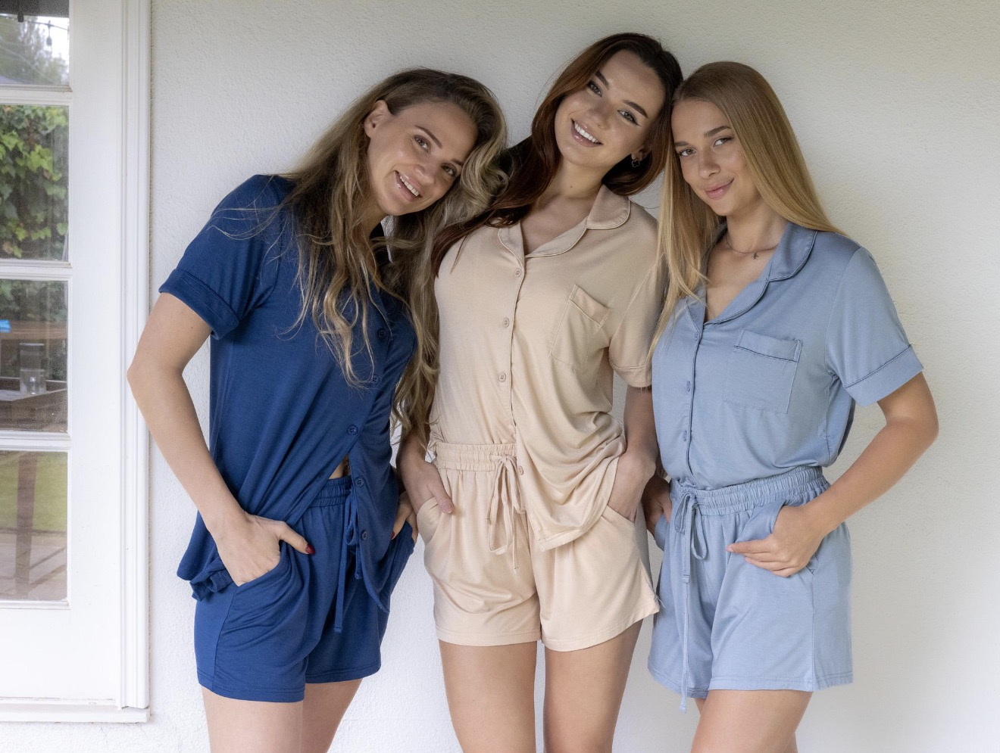
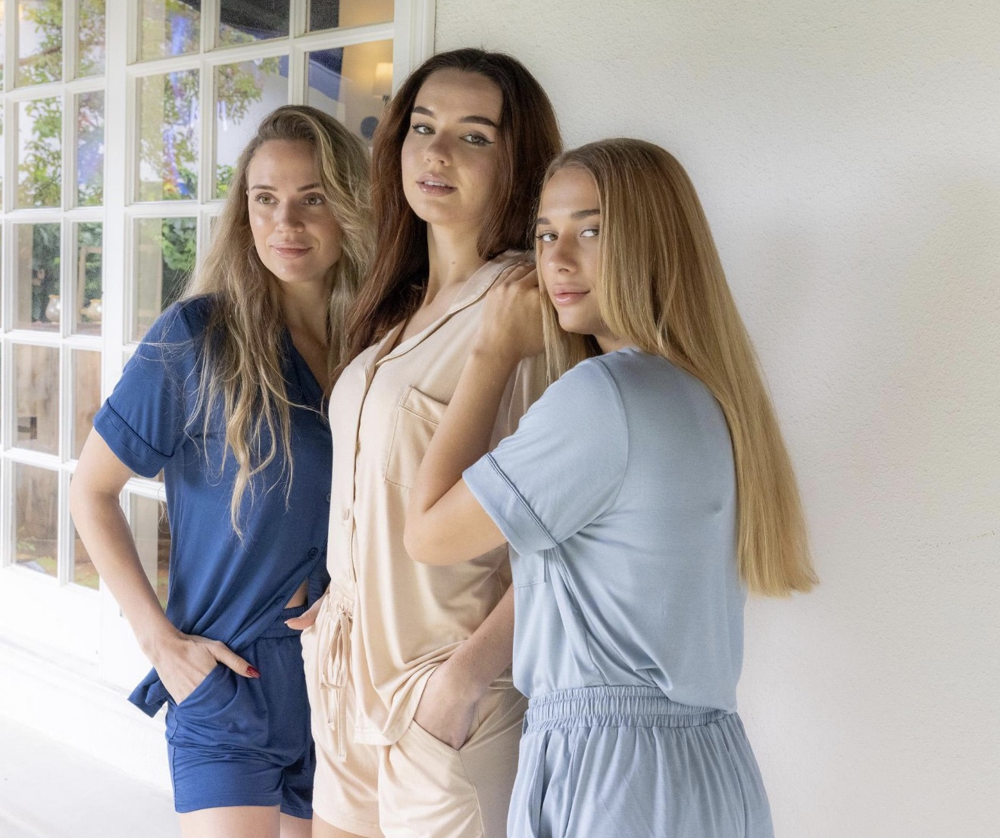
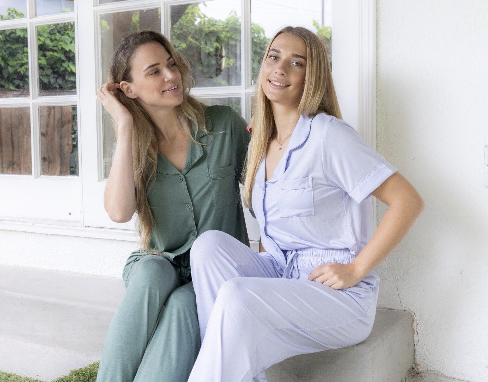

Julia Vaganova
Natural / Casting Basics

Portfolio Category
Natural / casting basics.
This page is the softer, cleaner side of Julia's book. It is built for first reads: less styling, cleaner light, approachable expression, and images that help a client quickly understand how she looks without heavy production.




